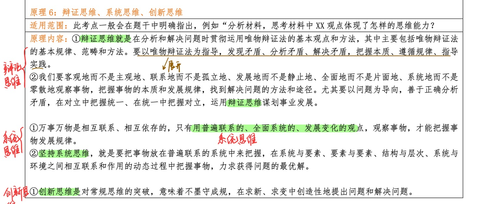
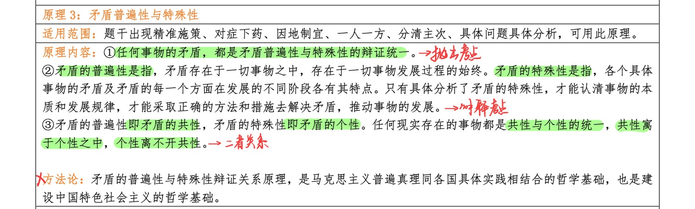
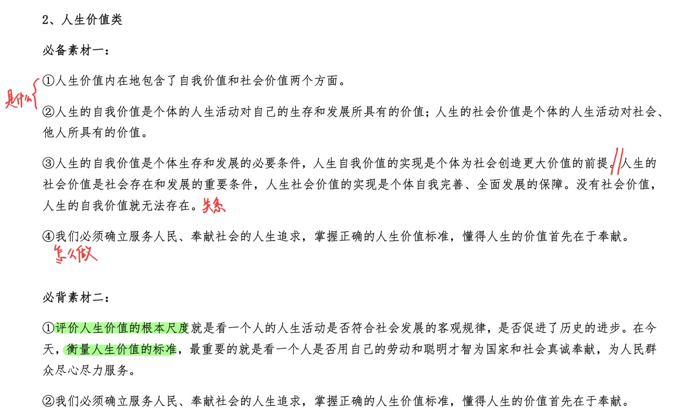
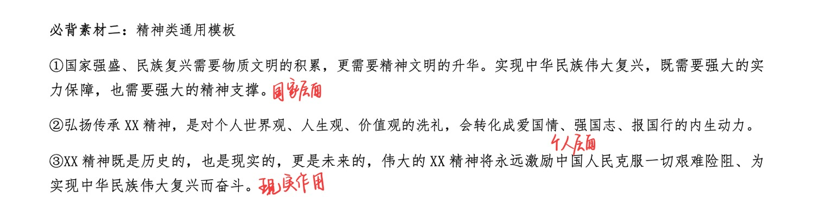
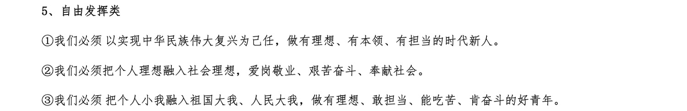

从哪里答：第(1)问抓材料里的三层对应："奇形怪状"的植株是现象、是偶然、是个性，背后隐藏的基因功能是本质、是必然、是共性；钱前由突变体的异常性状入手，正是由现象深入本质、通过偶然把握必然、从个性中把握共性，所以"一个突变体就是一把钥匙"。近5万份突变体库又是一个相互联系的整体，个别材料与整个基因宝库互为条件。第(2)问落到辩证思维与创新思维：辩证思维要求客观地、联系地、发展地、全面地、系统地看问题，在对立中把握统一；创新思维要求突破常规、不墨守成规，在求新求变中创造性地提出问题和解决问题，所以只有"从与众不同的视角出发"，才能在别人看到"病歪歪"的地方看到研究抓手和未来方案。
结合材料回答问题：海南三亚南繁育种基地内，科研人员干劲十足，一身汗一脚泥.⋯⋯⋯不久前，由中国科学院院士钱前领衔培育的新型水稻“小薇”，在试验田里迎来丰收，实现亩产超400公斤。这种身高不足30厘米的超矮秆水稻，蕴含着巨大潜力：不仅适合高密度的工厂化“垂直农场”，更在问天实验舱完成了太空旅行，为未来的“太空农场”播下了希望。从一株奇特的“小矮稻”到广袤宇宙的“太空农场”，这背后，是钱前在水稻种质资源领域四十余载的没漫求索。追求完美的基因——更高产、更健壮，在传统种质研究中似乎是天经地义的。但在钱前的试验田里，他却对那些“病歪歪”“瘦弱”“奇形怪状”的植株情有独钟。“经常有人开玩笑，说别人的水稻都又高又壮，你怎么净挑这些不起眼的？”但在钱前看来，这些性状各异的“身类”，却是基因多样性最直观的体现。他举例说：“经典病例往往是某个医学领域的突破口。T农学也是如此，一株水稻如果长得很健康，反而找不到研究的抓手。但通过精细研究‘奇形怪状’的突变体，就能知道是哪个基因出了问题，从而理解它的正常功能。一个突变体就是一把钥匙，能打开一扇基因功能的大门。”从与众不同的视角出发，钱前带领团队年复一年地在田间实戏，最终创制了包含近5万份材料的水箱突变体库。“它就像一个巨型的图书馆，珍藏着水稻几万个基因的神奇故事，能让科研人员快速找到研究抓手，把复杂的性状拆解开来。”钱前说。为什么要如此执着于收集和创造这些千奇百怪的“基困”呢？“地球曾经历过无数次灾难，但生命总能延续，奥秋就在于基因的多样性。钱前解释说。在他看来，每一个看似微不足道的基因，都可能蕴舍着应对某种未知挑战的独特密码—有的能抵御干早，有的能耐受盐碱。守护和丰富基因多料性，就是在为未来可能出現的各种危机储备宝贵的解题方案。“我们不知道未来会面临什么，但应对方案很可能就藏在这些看似不起眼的基因里。“钱前说。摘编自〈人民日报》（2026年4月22日）（1）指出从“奋形径状”的植株人手打造基因宝库所涉及的唯物辩证法基本范畴。（2）“从与众不同的视角出发”对我们增强辩证思维能力和创新思维能力有何启示？


注：唯物辩证法"基本范畴"（现象与本质、必然性与偶然性、原因与结果）讲义未单列专块，第(1)问范畴部分答题点据课程与材料自拟；截图取"矛盾普遍性与特殊性""辩证思维、系统思维、创新思维"两块作素材支撑。
从哪里答：第(1)问定位习近平党建思想：它是习近平新时代中国特色社会主义思想的重要组成部分，是马克思主义建党学说中国化时代化的最新成果；它回答了"建设什么样的长期执政的马克思主义政党、怎样建设长期执政的马克思主义政党"这一重大时代课题，为新时代管党治党、兴党强党提供了科学指引和根本遵循。第(2)问回答"为什么以政治建设为统领"：党的政治建设是党的根本性建设，决定党的建设方向和效果；政治建设抓好了，思想、组织、作风、纪律、制度建设就有了"魂"和"根"；以政治建设为统领，才能保证全党服从中央、维护党中央权威和集中统一领导，把党的领导落实到党和国家事业各领域各方面各环节。
结合材料回答问题：为深入抓好习近平党建思想学习贯彻工作，中央党的建设工作领导小组印发《关于学习贯彻习近平党建思想的通知》（以下简称《通知》）。《通知》指出，党的十八大以来，以习近平同志为核心的党中央围绕建设什么样的长期执政的马克思主义政党、怎样建设长期执政的马克思主义政党的重大时代课题，提出一系列管党治党、兴党强党新理念新思想新战略，形成习近平党建思想。《通知》强调，要深入学习领会习近平党建思想的料学内涵。深刻领会“坚持党的领导是中国特色社会主义最本质的特征”；深刻领会“坚持党中央集中统一领导”是党的领导的最高原则；深刻领会“坚持全面从严治党”是新时代党的建设的战略方针；深刻领会“坚持不忘初心、牢记使命”是党的宗旨立场和价值取向；深刻领会“坚持以党的政治建设为统领”是新时代党的建设的根本要求；深刻领会“坚持用党的创新理论凝心铸魂”是党的思想建设的根本任务；深刻领会“坚持锤炼坚强党性”是党员，干部的终身课题；深刻领会“坚持健全上下贯通、执行有力的组织体系”是党的优势所在、力量所在；深刻领会“坚持建设堪当民族复兴重任的高素质干部队伍”是关系党和国家事业的关键性问题；深刻领会“坚持推进作风建设常态化长效化”是保持党同人民群众血肉联系的有效途径；深刻领会“坚持用严明的纪律管全党治全党”是全面从严治党的治本之策；深刻领会“坚持一体推进不敢腐不能腐不想腐”是全面从严治党的重要方略和反腐败斗争的基本方针；深刻领会“坚特制度治党、依规治党”是全面从严治党的长远和极本之策；深刘领会“坚持落实管党治党政治贵任”是全面从严治党需要牢牢牵住的“牛鼻子”。摘编自《人民日报》（2026年6月19日）（1）如何认识习近平党建思想的地位与作用？（2）怎样深刻领会“坚持以此的政治建设为统领”是新时代党的建设的根本要求？
(1)习近平党建思想丰富和发展了马克思主义建党学说，是坚持把马克思主义基本原理同中国具体实际相结合、同中华优秀传统文化相结合推进党的理论创新的重大成果，是党和人民实践经验和集体智慧的结晶，是习近平新时代中国特色社会主义思想的重要组成部分，为深人推进新时代党的建设新的伟大工程提供了根本遵循和行动指南。
(2)第一，政治属性是政党区别于其他组织的核心要素，是政党的第一属性。旗帜鲜明讲政治是马克思主义政党的根本要求，政治建设决定党的建设方向和效果。
第二，政治建设是党的根本性建设，在党的建设总体布局中要把政治建设摆在首位。政治建设统领思想建设、组织建设、作风建设、纪律建设、制度建设以及反腐败斗争，为其提供政治方向和政治保证。
第三，始终重视从政治上建设党是中国共产党的优良传统。注重从政治上建设党，才能确保全党始终拥有统一的思想、坚定的意志、协调的行动、强大的战斗力，不断发展壮大、从胜利走向胜利。
坚持以党的政治建设为统领，是新时代推进党的自我革命、解决党面临的突出问题的关键举措，是着眼党的长期执政，确保党始终团结统一、成为新时代坚持和发展中国特色社会主义坚强领导核心的必然选择。
注：分析题讲义未覆盖，答题点据课程与材料自拟（讲义只有马原、史纲、思修、长征四个板块，无习近平党建思想专题）。
从哪里答：第(1)问按时间线梳理由旧到新的转变：孙中山领导辛亥革命推翻君主专制、建立中华民国；辛亥革命果实被窃取后，他又发动二次革命、护国运动、护法运动，屡败屡起，同逆时代潮流而动的各种势力斗争到底；晚年接受中国共产党和苏俄的帮助，把旧三民主义发展为新三民主义，实行联俄、联共、扶助农工三大政策。第(2)问回到大革命：中共三大确定国共合作方针，共产党帮助国民党改组、创办黄埔军校，发动工农运动，推动北伐胜利进军；共产党人在政治上、组织上、军事上起了关键作用，所以是孙中山革命事业最坚定的支持者、最忠诚的合作者，也是最忠实的继承者。
结合材料回答问题：材料1孙中山先生的伟大，不仅在于他领导了辛亥革命，而且在于他为了实现革命理想，与时俱进完善自己的革命理念和斗争方略，毫不妥协同逆时代潮流而动的各种势力进行斗争••⋯•毛泽东同志把三民主义纲领、统一战线政策、艰苦奋斗精神并称为孙中山先生“留给我们的最中心最本质最伟大的遗产”，是“对于中华民族最伟大的贡献”。中国共产党人是孙中山先生革命事业最坚定的支持者、最忠诚的合作者、最忠实的结承者。摘自习近平《在纪念孙中山先生诞辰150周年大会上的讲话》材料22026年11月12日是伟大的民族英雄、伟大的爱国主义者、中国民主革命的伟大先驱孙中山先生诞辰160周年纪念日。为缅怀孙中山先生为民族独立、社会进步、人民幸福所建立的不功勋，学习、继承和发扬孙中山先生的爱国思想，革命意志和进取精神，巩固和发展海内外中华儿女大团结，现固和发展最广泛的爱国统一战线，推动两岸关系和平发展、推进祖国统一大业，最大限度地把全民族的力量凝聚起来，为以中国式现代化全面推进强国建设、民族复兴伟业而不懈奋斗，中国人民政治协商会议第十四届全国委员会常务委员会决定届时举行隆重的纪念活动。摘编自《人民日报》（2025年11月2日）（1）孙中山先生为了实现革命理想，如何“与时俱进完善自己的革命理念和斗争方略，毫不妥协同逆时代潮流而动的各种势力进行斗争”？（2）结合中国共产党在大革命中的作用，说明中国共产党人是孙中山先生革命事业最坚定的支持者、最忠诚的合作者。
(1)辛亥革命失败后，为了实现革命理想，孙中山毅然发动了武装反袁的“二次革命”,做出了一系列挽救共和的努力。护法运动的失败，使他认识到想依靠南方军阀来反对北洋军阀，是行不通的。孙中山具有顽强的革命意志和进取精神，他看到中国共产党领导工人运动所产生的影响，认识到中国共产党是一支新兴的、生机勃勃的革命力量，愿意与中国共产党合作。1924年1月，孙中山主持召开中国国民党一大，对三民主义作出新的解释，即“新三民主义”。新三民主义的政纲同中国共产党在民主革命阶段的纲领基本一致，因而有了国共合作的政治基础。国民党一大确认了共产党员以个人身份加入国民党的原则。国民党一大事实上确认了联俄、联共、扶助农工的三大革命政策，标志着第一次国共合作正式形成。毛泽东同志把三民主义纲领、统一战线政策、艰苦奋斗精神并称为孙中山先生“留给我们的最中心最本质最伟大的遗产”,是“对于中华民族最伟大的贡献”。
(2)中国共产党正确估计了孙中山的革命立场和国民党进行改革的可能性，决定共产党员以个人身份加人国民党，以实现国共合作。国共合作汇集了全国革命力量，很快掀起了全国范围的大革命高潮。
在这场革命中，中国共产党起着独特的、不可替代的作用。第一，大革命是在反对帝国主义、反对军阀的政治口号下进行的。而提出这个口号的，正是中国共产党。第二，大革命是在以国共合作为基础的统一战线的组织形式下进行的。而中国共产党正是国共合作的倡导者和统一战线的组织者。第三，大革命是近代中国历史上空前广泛而深刻的群众运动。而中国共产党正是人民群众的主要发动者和组织者。第四，大革命的主要斗争形式是革命战争。共产党人不仅帮助和推动了国民革命军的建立，而且在军队中进行了卓有成效的政治工作，积极提高国民革命军的素质，增强它的凝聚力和战斗力；共产党员在战斗中更是身先士卒，起着先锋作用和表率作用。
注：分析题讲义未覆盖，答题点据课程与材料自拟（史纲讲义只有长征胜利90周年、社会主义改造70周年两个专题，仅在"周年纪念"处一句提及孙中山诞辰160周年）。
从哪里答：第(1)问从"英雄是民族最闪亮的坐标"切入：国家强盛、民族复兴既需物质文明积累，更需精神文明升华，崇尚英雄、缅怀先烈就是弘扬中国精神、赓续红色血脉，让英烈精神转化为爱国情、强国志、报国行的内生动力。第(2)问拆"无名"与"有名"："无名"是为大义隐身、为家国埋名，体现人生价值首先在于奉献、在于社会价值；"有名"是精神永续、山河铭记、时代传承。落到青年：把个人理想融入社会理想，把个人小我融入祖国大我、人民大我，在平凡岗位创造不凡之功，在服务人民、奉献社会中实现人生价值、升华人生境界。
结合材料回答问题；材料1清明假期，各地干部群众前往革命老区、革命纪念馆、烈士陵国等聰仰统吊，回望峥琮岁月、汲取信仰力量，弘杨红色文化、賡续英烈精神。抚今追昔，一场场深情的告您，让历史的丰碑于迫忆中您显巍娘。英雄是民族最闪亮的坐标。祭英，是为了铭记永不磨灭的荣光。4月5日上午，上海市龙华烈士陵困，晨光斜眼花岗岩广场。9时整，国歌声起，五星红旗冉冉升起。而向巍然矗立的无名烈士墓，礼兵组步上前，敬献花篮。全体人员肃立哀，向英雄烈士行三鞠躬礼。今年清明，上海在龙华烈士陵园等烈士纪念设施开展主题祭扫活动。活动现场，泰鸿钓烈士后人泰岭在石碑前动情追忆先辈英勇事迹。少先队员们诵读着《青松礼赞》，粗嫩的声哥透着坚定。不少市民俯下身，掏出白毛巾擦拭慕碑。英魂永驻，浩气长存，家国情怀在追思传承中历久弥坚。摘编自《人民日报》（2026年4月6日）材料2平凡岗位可建不凡之功，无名坚守可成不打之名。刘腊梨脑、刘早狗子、吴细丘子……江西瑞金革命烈士陵园，一个个“不像名字的名字”静静镌刻在墙壁之上。这些稚气的名字，属于长征路上年少殉国的红军烈士。按当地旧俗，没成年的孩子，不起大名。这群连大名都没有的孩子，却扛起了山河的重量。乳名质朴，信仰如山；生命平凡，气节如钢。回望长征路，牺牲者万千。一部长征史诗，犹如普通群众、红军将士以血肉铺就的精神之途。读懂长征，最动人的底色，便是以无名之身躯，筑有名之山河。何调无名？姓名不载史册，事迹鲜为人知。长征之途漫漫，处处有牺牲。湘江血战惊天地，年轻战士前仆后继、浴血突围，将生命永远留在了江河两岸。“三年不伙湘江水，十年不食湘江鱼””，成为老百姓对英烈朴素又深勿的缅怀。过雪山草地，单衣草鞋的战士逆风前行，“管做饭的饿死了，管衣服的冻死了，有力气的累死了”。长征路上铸丰碑，没天风雪见证红军的信仰与本色。多少年少战士、工农子弟、担架卫士，来不及留下只言片语，使用血肉之驱撕开封锁线、铺就前行路。平凡到渺小，普通到无名，却纯粹到赤诚、坚定如磐石。真正的无名，不是平庸无闻，而是为大义隐身、为家国埋名。何谓有名？精神永续、山河铭记、时代传承。个人名号会湮灭，精神丰碑将长存。摘编自《人民日报》（2026年10月20日）（1）为什么要崇尚英雄、缅怀先烈？（2）结合英雄的“无名”与“有名”，说明新时代青年应当怎样更好地实现人生价值、升华人生境界。



注：讲义未单列"崇尚英雄、缅怀先烈"专块，第(1)问答题点据材料与课程自拟；第(2)问取"人生价值类""精神类通用模板""自由发挥类"三块作素材。
从哪里答：第(1)问按三个视角分层作答：作为参与者，中国深度参与全球环境治理、落实气候变化《巴黎协定》、推动共建清洁美丽世界；作为贡献者，中国以新能源汽车、光伏等绿色产能和生态环境法典，向世界提供绿色公共产品和治理方案；作为引领者，在个别国家重新强化高碳发展路径时，中国坚持绿色转型、持续推进生态文明制度建设，习近平生态文明思想对全球生态文明建设作出原创性贡献。第(2)问讲中国为什么是确定性力量：坚持独立自主的和平外交政策，推动落实全球发展、安全、文明、治理四大全球倡议，推动构建人类命运共同体；以中国式现代化和高水平对外开放同世界共享发展机遇，为世界经济增长注入信心和动力。
结合材料回答问题：材料1最近，两则与绿色发展有关的新闹，耐人寻味。一则是“车”。今年6月，中国车企占欧洲插电式混合动力汽车交付量的34%，创下历史新高；中国主要电动踏板车生产商的海外销售，今年预计增长约70%。“中国车”正引领全球绿色出行新风尚。一则是“法”。8月15日，生态环境法典将正式施行。这部习近平生态文明思想法治化、系统化、制度化的集大成之作，也是新时代推进全面依法治国的标志性成果，将为全球环境治理送上“独特的中国礼物”。“在当前一些国家重新强化高碳发展路径的背景下，中国持续推进生态环搅制度建设，更凸显了中国在全球环搅治理中的引领作用。”墨西哥城自治大学国际政治研究员爱德华多•苏利如是说。去年7月，《习近平生态文明文选》第一卷出版发行。全面把握习近平生态文明思想对全球生态文明建设作出的原创性贡献，深刻领悟这一重要思想的世界意义，既要从文献原著中汲取智慧，也要在现实探索中寻找答案。从“参与者”“贡献者”“引领者”三个视角，更能感悟中国绿色发展何以造福世界。摘编自《人民日报》（2026年8月14日）材料2“我们要坚持独立自主的和平外交政策，推动落实四大全球倡议，推动构建人类命运共同体，为变乱交织的世界注入更多确定性和正能量。”在庆视中华人民共和国成立77周年招待会上，习近平总书记铿锵有力的话语，展现中国共产党人为人类谋进步、为世界谋大同的天下情怀，彰显中国与世界共享机遇、共谋发展的大国担当。“我们有坚定推进中国式现代化的决心，也有以高水平对外开放同世界共享发展机過的胸怀，将以自身发展为全球经济增长注入信心和动力。”这是古老东方大国一步步迈向伟大复兴给世界带来的新气象、新塑造。摘编自《人民日报》（2026年10月4日）（1）从“参与者”“贡献者”“引领者”的视角，说明“中国绿色发展何以造福世界”。（2）如何理解中国“为变乱交织的世界注人更多确定性和正能量”？
(1)生态文明建设，关系中华民族永续发展，关乎人类文明未来走向。中国秉持绿水青山就是金山银山理念，坚定不移走生态优先、绿色发展之路，是全球生态文明建设的参与者、贡献者、引领者。中国坚持将生态文明建设融入经济社会发展全过程，实现生态保护与经济增长相互促进，为发展中国家探索绿色发展路径提供了有益启示；中国式现代化是人与自然和谐共生的现代化，创造了人类文明新形态，为全球低碳转型贡献了切实可行的实践方案；中国制定和颁布生态环境法典，为世界各国尤其是发展中国家提供了可资借鉴的立法范例。
(2)当前，世界百年变局加速演进，霸权主义、单边主义、保护主义逆流而动，国际形势变乱交织，各种风险挑战层出不穷。人类又一次站在何去何从的十字路口。
中国始终把自身发展置于人类发展的坐标系中，始终把自身命运与世界各国人民命运紧密相连。中国坚定不移扩大开放、推进高质量发展，持续发挥“稳定锚”作用，为世界经济提供难能可贵的信心和确定性。中国坚持独立自主的和平外交政策，推动落实四大全球倡议，推动构建人类命运共同体，不断为人类和平与发展事业贡献中国智慧、中国方案。一个“站在历史正确的一边，站在人类进步的一边”的中国，始终是世界和平的建设者、全球发展的贡献者、国际秩序的维护者、公共产品的提供者。新征程上，中国必将以自身稳定发展为变乱交织的世界注人更多确定性和正能量。
注：分析题讲义未覆盖，答题点据课程与材料自拟（讲义只有马原、史纲、思修、长征四个板块，无生态文明与全球治理论述）。